Словари Map в Dart
Проблема с использованием списков для связанных данных
Возьмём обычный школьный журнал. В нем есть список учеников, и для каждого ученика оценки по разным предметам. Как можно связать ученика с его оценками, используя списки и переменные?
Пробуем хранить данные в списках:
Dart - Хранение в списках


void main() {
List students = ['Аня', 'Боря', 'Наташа', 'Глеб', 'Даша'];
List<List<int>> studentGrades = [
[5, 4, 5], // Оценки Ани по Математике, Физике, Информатике
[3, 5, 4], // Оценки Бори
[5, 5, 5], // Оценки Наташи
[4, 3, 4], // Оценки Глеба
[5, 4, 3], // Оценки Даши
];
String student = 'Наташа';
// Узнать оценки ученика
int indexOfStudent = -1; // Переменная для хранения индекса
for (int i = 0; i < students.length; i++) {
if (students[i] == student) {
indexOfStudent = i;
break; // Если нашли, то выходим из цикла
}
}
if (indexOfStudent != -1) {
print('$student: ${studentGrades[indexOfStudent]}');
} else {
print('Ученик $student не найден.');
}
} Результат:
Наташа: [5, 5, 5]Почему это "плохо"?
На первый взгляд это работает. Но давайте подумаем о производительности и удобстве.
- Производительность (Скорость поиска):
- Когда мы ищем "Наташу", нам приходится перебирать весь список
studentsэлемент за элементом, пока не найдем ее имя. - Если 5 учеников, это быстро, а если 5 000 000 ? Нам все равно придется начинать с первого ученика и идти по порядку.
- В худшем случае (если ученик в конце списка или его нет вообще), придется проверить все N элементов. Это называется линейное время, или O(N) в Big O нотации.
- Это очень долго и не производительно!
- Когда мы ищем "Наташу", нам приходится перебирать весь список
- Связь данных:
- Также приходится поддерживать два отдельных списка (
studentsиstudentGrades), где соответствие между именем и оценками держится только за счет одинаковых индексов. - Что, если мы случайно удалим имя из одного списка, но не из другого? Данные рассинхронизируются! Это хрупко и подвержено ошибкам!
- Также приходится поддерживать два отдельных списка (
Используем вложенные списки
Dart - Вложенные списки
void main() {
List<List<dynamic>> students = [
['Аня', [5, 4, 5]],
['Боря', [3, 5, 4]],
['Наташа', [5, 5, 5]],
['Глеб', [4, 3, 4]],
['Даша', [5, 4, 3]],
];
String student = 'Наташа';
List? studentGrades;
for (var studentEntry in students) {
if (studentEntry[0] == student) {
// Приводим тип
studentGrades = studentEntry[1] as List;
break;
}
}
if (studentGrades != null) {
print('$student: $studentGrades');
} else {
print('Ученик $student не найден.');
}
} Результат:
Наташа: [5, 5, 5]Почему это все еще "плохо"?
- Проблема скорости поиска (O(N)) осталась: Перебираем каждый элемент списка
studentsв поисках нужного имени. - Типобезопасность страдает: Приходится делать приведение типов (
as List<int>), что может привести к ошибкам в рантайме, если данные не соответствуют ожиданиям. Код становится менее надежным.
Решение проблемы: Map
Именно для таких сценариев, где есть пары "ключ-значение" и нужен быстрый поиск по ключу, была придумана структура данных Map (также известная как словарь, хеш-таблица или ассоциативный массив).
В Map обращаемся по ключу (имя ученика), дай значение (его оценки), связанное с этим ключом". И Map делает это почти мгновенно, независимо от того, сколько у вас данных!
Dart - Использование Map
void main() {
Map<String, List<int>> students = {
'Аня': [5, 4, 5],
'Боря': [3, 5, 4],
'Наташа': [5, 5, 5],
'Глеб': [4, 3, 4],
'Даша': [5, 4, 3],
};
// Вот так просто! И Главное очень быстро!
List? studentGrades = students['Наташа'];
studentGrades != null
? print(studentGrades)
: print('Ученик не найден');
} Результат:
[5, 5, 5]Почему Map это круто и легко?
- Мгновенный поиск (O(1) - Константное время)!
- Поиск элемента по ключу занимает константное время (O(1)). Это означает, что время поиска не зависит от количества элементов. Будь у вас 5 учеников или 5 миллионов, поиск займет примерно одно и то же минимальное время!
- Естественная связь данных:
- Пары "ключ-значение" в
Mapнеразрывно связаны. Не нужно беспокоиться о синхронизации двух списков. Mapобеспечивает типобезопасность:Map<String, List<int>>четко указывает, что ключи — строки, а значения — списки целых чисел.
- Пары "ключ-значение" в
Map
Map решает проблему эффективного поиска и логичной организации связанных данных, что делает код быстрее, чище и надежнее.
Что такое Map
Map одна из самых мощных и часто используемых структур данных!
Map Это объект, который представляет собой коллекцию пар ключ-значение.
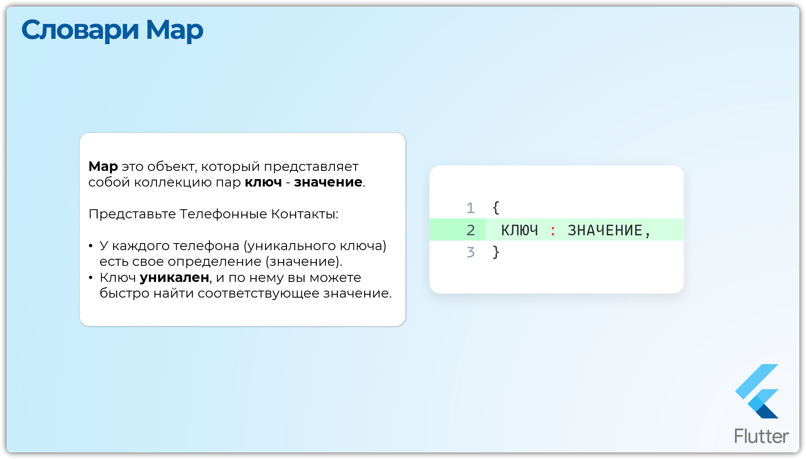
Другой пример, вместо школьного журнала представьте телефонные контакты. У каждого телефона (уникального ключа) есть свое определение (значение).
Ключ уникален, и по нему вы можете быстро найти соответствующее значение.
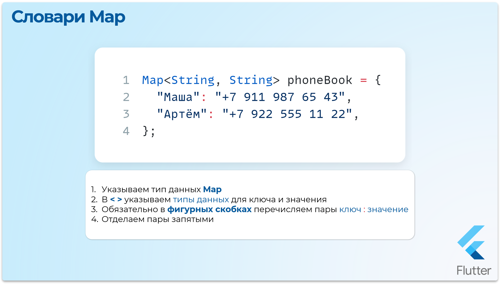
Важные характеристики Map
Уникальность ключей- каждый ключ в Map должен быть уникальным.Гибкость типов- ключи и значения могут быть объектами любого типа.Итерация- можно перебирать ключи, значения или пары "ключ-значение".Отображение- каждый ключ связан ровно с одним значением.
Dart - Основы работы с Map
void main() {
// Имя (ключ) : Номер телефона (значение)
Map<String, String> phoneBook = {
'Маша': '+7 911 987 65 43',
'Артём': '+7 922 555 11 22',
};
// Получаем значение по ключу
print('Телефон Маши: ${phoneBook['Маша']}');
// Обновляем номер Маши
phoneBook['Маша'] = '+7 900 777 88 99';
print('Новый телефон Маши: ${phoneBook['Маша']}');
// Добавляем новый контакт
phoneBook['Юля'] = '+7 933 444 00 11';
print('Телефон Юли: ${phoneBook['Юля']}');
// Если нет значения в словаре, то будет null
print('Телефон Джигана: ${phoneBook['Джиган']}');
print('Вся телефонная книга: $phoneBook');
}Результат:
Телефон Маши: +7 911 987 65 43
Новый телефон Маши: +7 900 777 88 99
Телефон Юли: +7 933 444 00 11
Телефон Джигана: null
Вся телефонная книга:
{
Маша: +7 900 777 88 99,
Артём: +7 922 555 11 22,
Юля: +7 933 444 00 11
}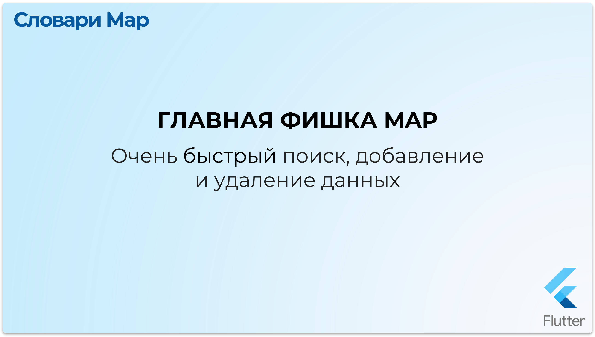
Очень быстрый поиск, добавление и удаление данных
В отличие от списков (List), где для поиска элемента часто приходится перебирать каждый элемент по порядку (в худшем случае — до конца списка), Map позволяет найти нужное значение практически мгновенно!
Производительность: O(1) – Константное время
Это одно из самых важных понятий в программировании!
List (список): Поиск элемента по значению может занимать
линейное время O(n), где n - количество элементов.
То есть, чем больше список, тем дольше поиск.Map (словарь): Поиск элемента по ключу в Map (в среднем) занимает
константное время O(1). Это означает, что время поискане зависит от количества элементов. Будь у вас 10 элементов или 10 миллионов, поиск по ключу займет примерно одно и то же время!
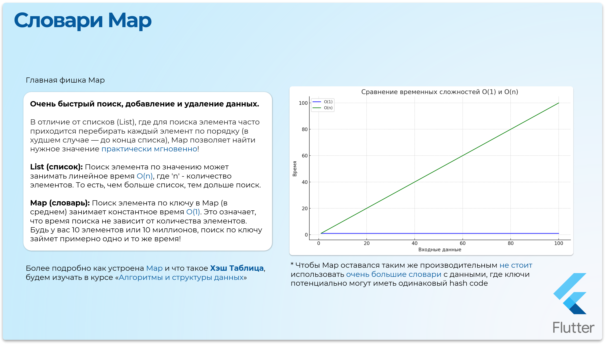
Как это работает? Хеш-таблицы в двух словах
Map в Dart, по умолчанию (для LinkedHashMap), реализован на основе хеш-таблиц
Хеширование ключа- при добавлении пар "ключ-значение" в Map, Dart берет ключ и вычисляет его хеш-код (hashCode).Индексация- на основе этого хеш-кода вычисляется индекс во внутреннем массиве данных Map.Хранение- пара "ключ-значение" затем помещается в соответствующую "ячейку" этого массива.Поиск- запрашивает значение по ключу, вычисляет хеш-код ключа, ищет индекс и мгновенно извлекает значение.
Более подробно
Более подробно как устроена Map внутри и что такое Хэш Таблица, будем изучать в курсе «Алгоритмы и структуры данных»
Получение значений
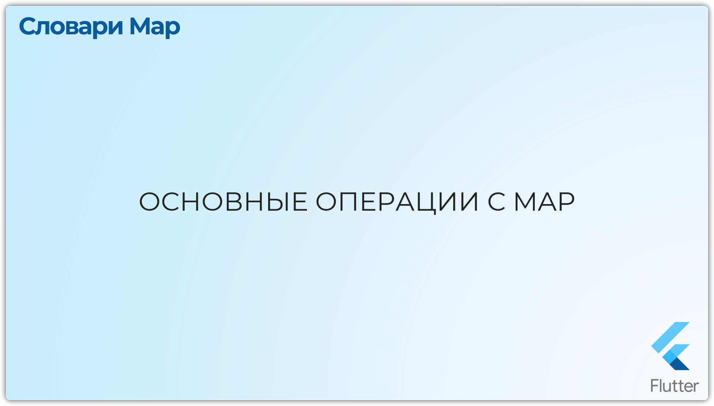
Индексатор [ ] - Самый простой способ получить значение по ключу. Если ключа нет, вернет null.
Dart - Индексатор
Map user = {'name': 'Юля', 'age': '18'};
print(user['name']); // Юля
print(user['city']); // null containsKey(Object? key) - Проверяет, содержит ли Map указанный ключ.
Dart - containsKey
print(user.containsKey('name')); // true
print(user.containsKey('address')); // falsecontainsValue(Object? value) - Проверяет, содержит ли Map указанное значение.
Dart - containsValue
print(user.containsValue('Юля')); // true
print(user.containsValue('25')); // falseentries - Возвращает итерируемый объект, содержащий все пары "ключ-значение"
Dart - entries
print(user.entries); // (MapEntry(name: Юля), MapEntry(age: 18))
print(user.entries.first.key); // namekeys - Возвращает все ключи (итерируемый объект)
values - Возвращает все значения (итерируемый объект)
Dart - keys и values
print(user.keys); // (name, age)
print(user.values); // (Юля, 18)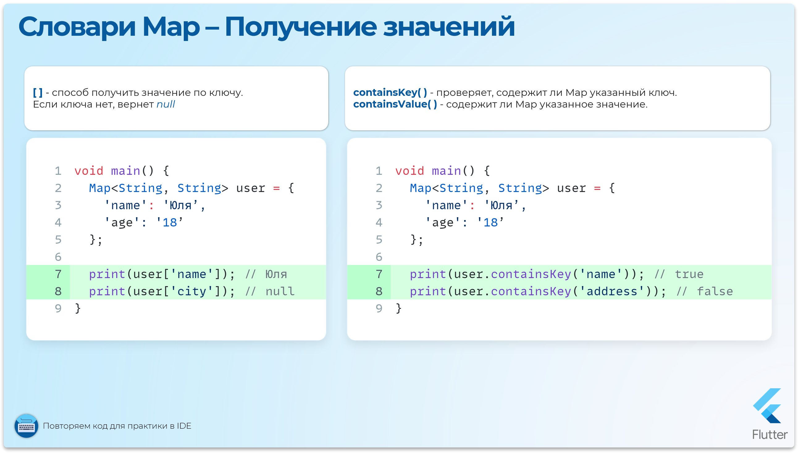
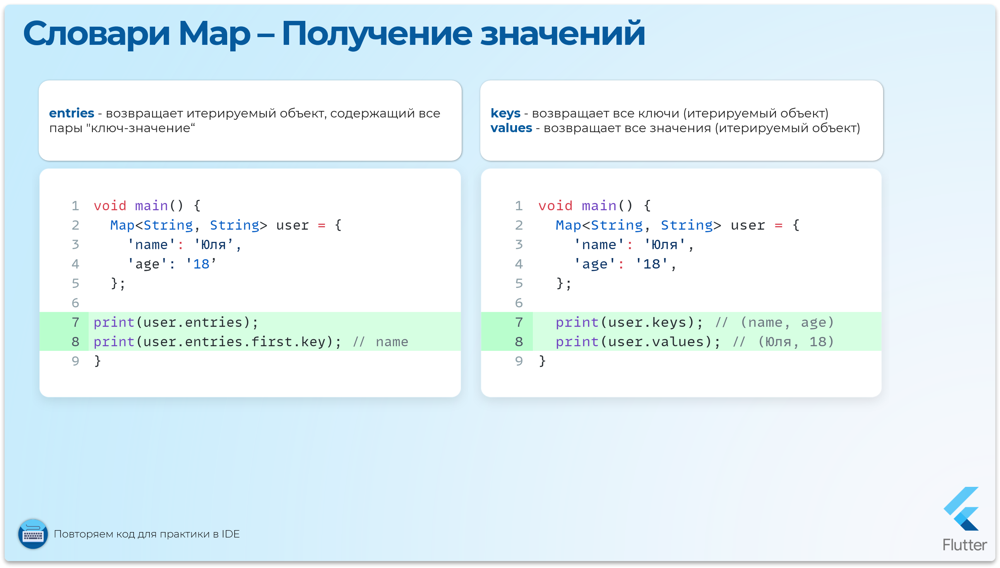
Добавление и обновление значений
Индексатор []= для добавления новой пары "ключ-значение" или обновления значения, если ключ уже существует.
Dart - Добавление и обновление
main() {
Map programmerSalary = {'Python': 150000, 'Go': 300000};
programmerSalary['Flutter'] = 200000; // Добавление
programmerSalary['Python'] = 180000; // Обновление
print(programmerSalary);
} Результат:
{
Python: 180000,
Go: 300000,
Flutter: 200000,
}putIfAbsent() метод работает как "Запиши, если ещё нет"
Помогает добавить что-то в Map только если этого "чего-то" там ещё нет.
Если ключ уже есть, то "новое" значение (которое добавляем) даже не будет создаваться
Dart - putIfAbsent
void main() {
Map<String, int> mathGrades = {
'Юля': 5,
'Максим': 4,
};
print('Начальные оценки: $mathGrades');
// Добавляем Артёма (его ещё нет в списке)
mathGrades.putIfAbsent("Артём", () {
print("Артёма не было, ставим ему 3");
return 3; // Это значение вернется, если Артёма не было
});
print(mathGrades); // Показываем весь словарь
// Пытаемся добавить Максима, но он уже есть в словаре
mathGrades.putIfAbsent("Максим", () {
// Если ключ "Максим" уже есть в словаре, то код ниже не выполнится
print("Максим не было, ставим ему 3");
return 3;
});
print(mathGrades); // Показываем весь словарь
}Результат:
Начальные оценки: {Юля: 5, Максим: 4}
Артёма не было, ставим ему 3
{
Юля: 5,
Максим: 4,
Артём: 3,
}update() обновляет значение, связанное с key.
update вызывается для обновления существующего значения. Получает текущее значение и возвращает новое.
ifAbsent вызывается, если key не найден в Map. Если не указан, и ключ не найден, будет выброшена ошибка.
Dart - update
Map productCounts = {'BitCoins': 100, 'Ethereum': 400};
// Обновляем существующее значение
productCounts.update('BitCoins', (value) => value + 100);
print(productCounts);
// Обновляем или добавляем, если нет
productCounts.update('ShibaInu',
(value) => value + 100, // Эта часть не будет вызвана, т.к. 'ShibaInu' нет
ifAbsent: () => 100000000, // Добавляем 'ShibaInu'
);
print(productCounts); Результат:
{
BitCoins: 200,
Ethereum: 400,
ShibaInu: 100000000,
}updateAll( ) обновляет все значения в Map, применяя функцию update к каждой паре "ключ-значение".
Dart - updateAll
Map prices = {'milk': 2, 'bread': 3, 'eggs': 4};
prices.updateAll((key, value) => value * 2); // Удваиваем все цены
print(prices); // {milk: 4, bread: 6, eggs: 8} 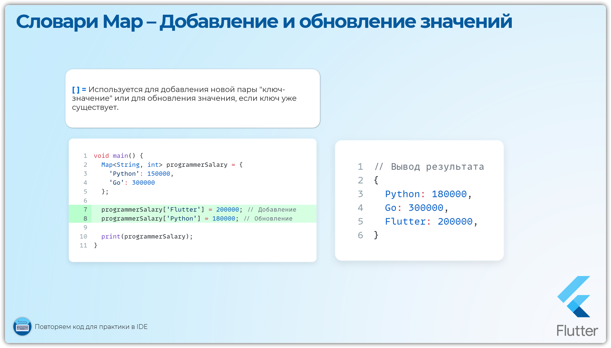
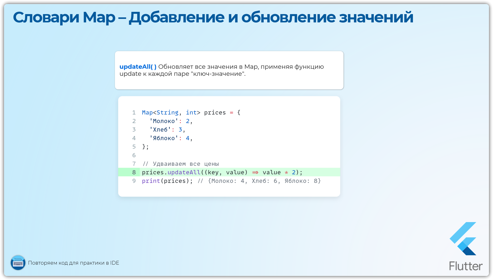
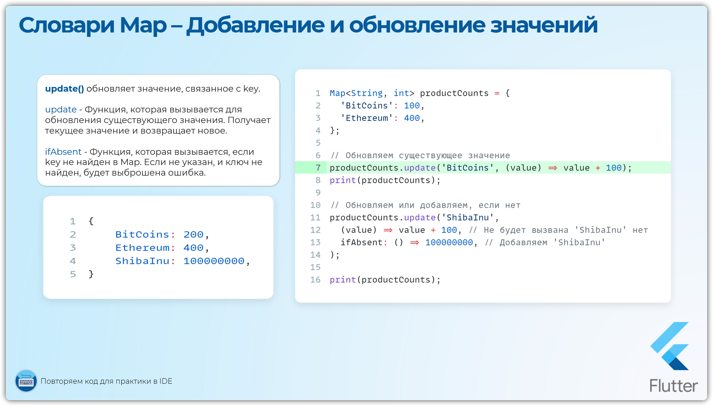
Удаление значений
remove() удаляет пару "ключ-значение" по указанному ключу. Возвращает удаленное значение или null, если ключ не найден.
Dart - remove
void main() {
Map<String, String> settings = {
'sound': 'on',
'vibrate': 'on',
'notifications': 'off',
};
final removedValue = settings.remove('sound');
print('Removed: $removedValue'); // Удаленное значение: on
print(settings); // {vibrate: on, notifications: off}
settings.remove('none'); // Проигнорируется
}removeWhere() удаляет все пары "ключ-значение", для которых функция колбэк возвращает true.
Dart - removeWhere
void main() {
Map<String, int> students = {
'Маша': 17,
'Юля': 20,
'Артём': 15,
'Антон': 21,
};
// Удаляем Студентов возраст которых меньше 18
students.removeWhere((key, value) => value < 18);
print(students); // { Юля: 20, Антон: 21 }
}clear() удаляет все элементы из Map.
Dart - clear
main() {
Map<String, int> students = {
'Маша': 17,
'Юля': 20,
'Артём': 15,
'Антон': 21,
};
students.clear();
print(students); // { }
}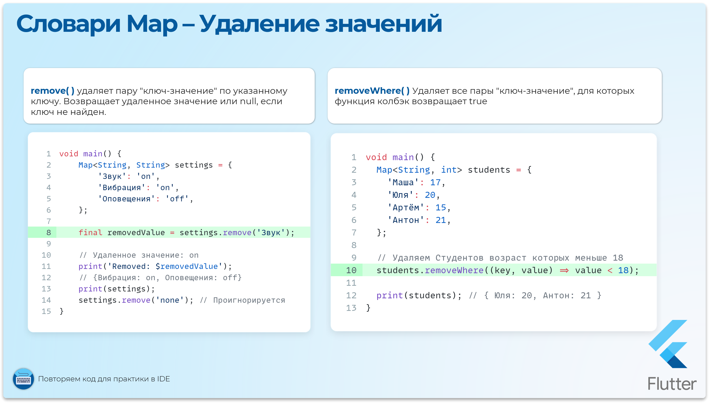
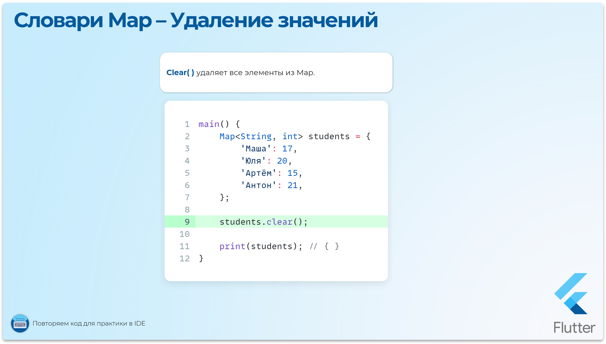
Перебор значений в Map
forEach() выполняет функцию колбэк для каждой пары "ключ-значение".
Dart - forEach
void main(List args) {
Map<String, int> students = {
'Маша': 17,
'Юля': 20,
'Артём': 15,
'Антон': 21,
};
students.forEach((key, value) => print("Студент $key, возраст $value"));
} Результат:
Студент Маша, возраст 17
Студент Юля, возраст 20
Студент Артём, возраст 15
Студент Антон, возраст 21for-in
for-in с entries перебор пар MapEntry.
for-in с keys или values перебор только ключей или только значений.
Dart - for-in циклы
void main(List args) {
Map<String, int> students = {'Маша': 17, 'Юля': 20, 'Артём': 15, 'Антон': 21};
for (var entry in students.entries) {
print('Ключ: ${entry.key}, Значение: ${entry.value}');
}
for (var key in students.keys) {
print('Ключ: $key');
}
for (var value in students.values) {
print('Значение: $value');
}
} Результат:
Ключ: Маша, Значение: 17
Ключ: Юля, Значение: 20
Ключ: Артём, Значение: 15
Ключ: Антон, Значение: 21
Ключ: Маша
Ключ: Юля
Ключ: Артём
Ключ: Антон
Значение: 17
Значение: 20
Значение: 15
Значение: 21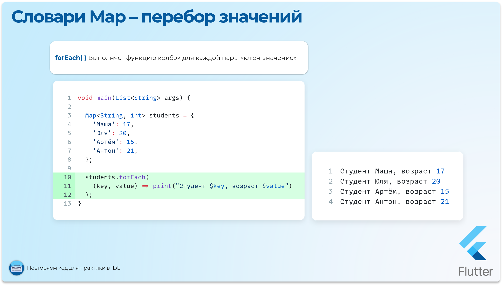
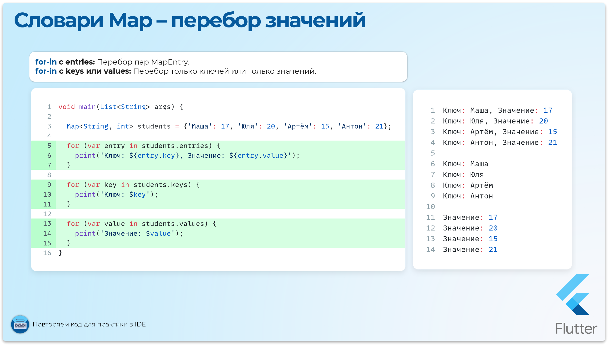
Дополнительно
length isEmpty isNotEmpty containsKey - получение размера Map, проверка на пустоту, проверка на ключи или значения
Dart - Дополнительные методы
void main(List args) {
Map<String, int> students = {'Маша': 17, 'Юля': 20, 'Артём': 15, 'Антон': 21};
print(students.length); // 4 пары
print(students.isEmpty); // false
print(students.isNotEmpty); // true
// ! Содержит ли Map значение или ключ
print(students.containsKey('Маша')); // true
print(students.containsValue('Андрей')); // false
} 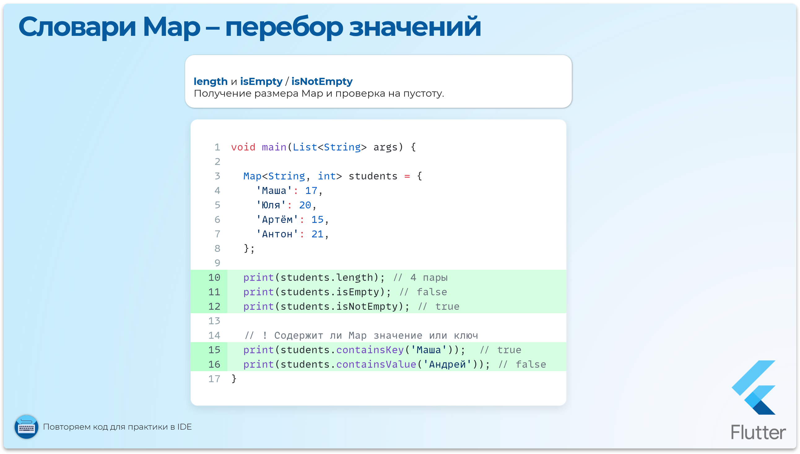
Использование Spread-оператора, if и for для создания данных Map
Как и для списков, в Dart можно использовать spread-оператор (...) для объединения Map, а также if и for для условного добавления элементов или создания Map на основе итерации.
Spread-оператор ...
Это инструмент, который позволяет "высыпать" содержимое одной коллекции (List, Set или Map) в другую, новую коллекцию. Проще говоря, spread-оператор распаковывает элементы из одной коллекции и вставляет их в другую коллекцию.
Dart - Spread-оператор
void main() {
// Обычный завтрак
final Map<String, int> basicBreakfast = {
'Молоко': 1,
'Хлопья': 1,
};
// Переменная, которая говорит, сегодня праздник или нет
final bool isHoliday = true;
// Делаем "супер-завтрак"!
final Map<String, int> superBreakfast = {
...basicBreakfast, // Развернём сюда данные из другой Map
'Ягоды': 5, // Добавим ягоды
// Если сегодня праздник, то будет торт
if (isHoliday) 'Торт': 1,
// Сколько ложек сахара
for (int i = 1; i <= 3; i++) 'Ложек_Сахара_$i': i,
};
print('Мой супер завтрак: $superBreakfast');
}Результат:
Мой супер завтрак:
{
Молоко: 1,
Хлопья: 1,
Ягоды: 5,
Торт: 1,
Ложек_Сахара_1: 1,
Ложек_Сахара_2: 2,
Ложек_Сахара_3: 3
}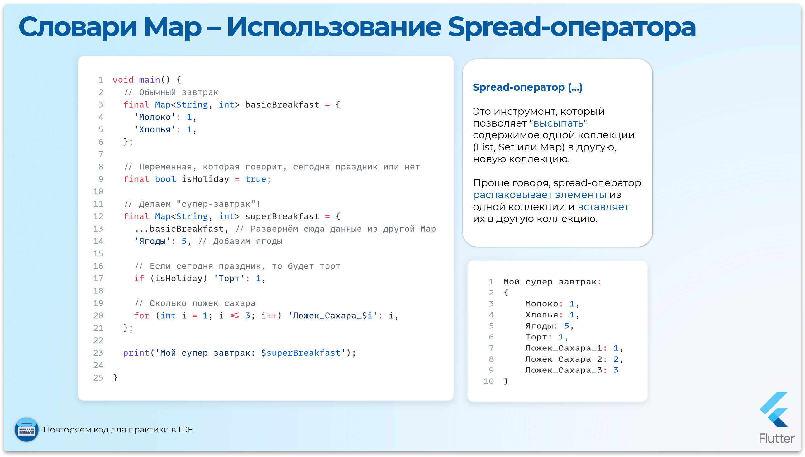